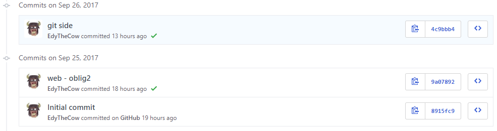

Git og Github
Git og GitHub er ikke det samme som mange tror. GitHub er basert på Git-teknologi som lar programmerere lagre, administrere og spore koden sin. Det er mange flere alternativer til GitHub som bruker Git.
Git
Git ble opprettet av Linus Torvalds som også laget Linux. Git er det mest brukte versjons kontrollsystem i verden i dag. Git lagrer kode og alle endringer. Hvis du vil gå tilbake til den aller første endringen du har gjort, det kan du. Men hele grunnen til at Git ble opprettet i første omgang var å gjøre samarbeidet mye enklere. Personen kan «commite» eller lage en «pull request» til eksisterende kode; Eieren av prosjektet kan da enten godta eller avslå «pull request». Alle endringene blir stadig sporet som gir deg oversikt over prosjektet ditt.
GitHub
Som nevnt tidligere, er GitHub ikke det samme som Git. GitHub bruker Git-teknologien for å gi brukervennlig grensesnitt. GitHub lagrer også hele koden i sin sky, GitHub er kjent for å være veldig stabil. Det finnes mange alternativer til GitHub som BitBucket, GitLab, Gitea og mange flere.
Jeg har brukt alle nevnt tjenester. BitBucket gir ubegrenset private repositories, men det har et dårlig brukergrensesnitt som ikke er nybegynnervennlig. GitLab er også gratis, og gir deg mulighet til å kjøre den på egen server. GitLab er også full av sikkerhetsproblem, aldri bruk GitLab. Gitea er open source og er skrevet i Go, som er et programmeringsspråk laget av Google, den fokuserer på ytelse. Gitea er nesten en kopi av GitHub, men open source.
Hvis du er ny til Git, start med å bruke GitHub’s brukervennlige klient. Det gir deg en ide om hvordan Git fungerer på en brukervennlig måte. Ellers er kommandolinjen mye mer effektiv og kraftig når du lærer det.
Du kan få ubegrenset private repositories på GitHub ved bruk av skole kort. Du kan lese mer om det her education.github.com.
Mine commits
Klikk her for å komme seg til oblig2 repository. Jeg har også satt opp GitHub pages, da kan du se den siste versjon av nettside her: edythecow.github.io/webutvikling-oblig2. Klikk på bilde for å komme seg til commits side.